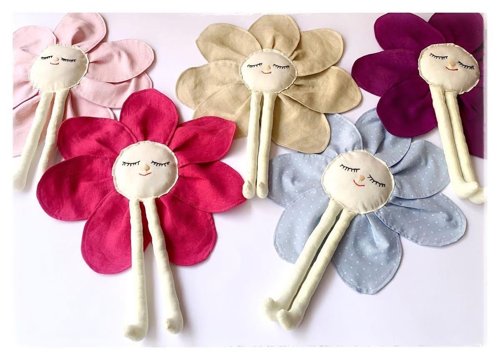
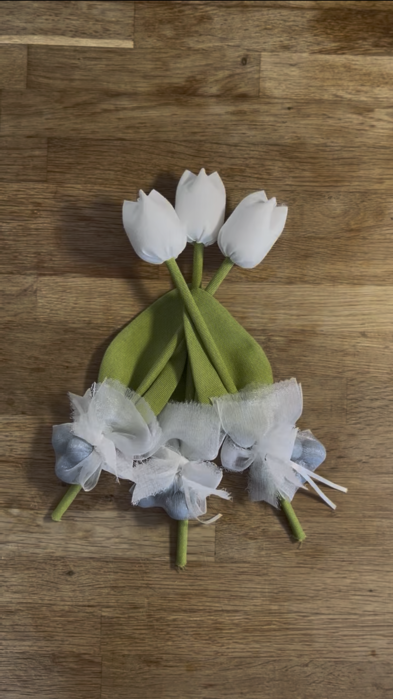

Ogni punto racconta una storia. Dalla delicatezza di un corredino alla magia di una bomboniera, creiamo cose belle che durano nel tempo.
Tutto è iniziato da bambina, con un filo, un ago e tanta curiosità. Quella passione, coltivata con pazienza negli anni, è diventata il mio mestiere.
Da Rosolini realizzo capi e piccoli oggetti fatti a mano, uno alla volta, con la calma che richiede il lavoro ben fatto. Ogni pezzo è unico e nasce dai tuoi desideri: scegli tessuti, colori e dettagli, e io li trasformo in qualcosa che racconta te e la tua famiglia.


Lavoro su commissione, ascoltando ogni richiesta. Raccontami cosa immagini e lo realizzeremo insieme.
Scorri o trascina per scoprire le creazioni recenti
Scrivimi su WhatsApp o via e-mail. Ascolto le tue esigenze e i dettagli che desideri.
Selezioniamo tessuti, colori, ricami e finiture per dare forma al progetto.
Con la calma del lavoro artigianale confeziono il tuo capo unico, pronto per te.
Scrivimi o chiamami: sarò felice di ascoltare la tua idea e trasformarla in un ricordo speciale.
Rosolini (Siracusa), Sicilia — Lavorazioni su ordinazione